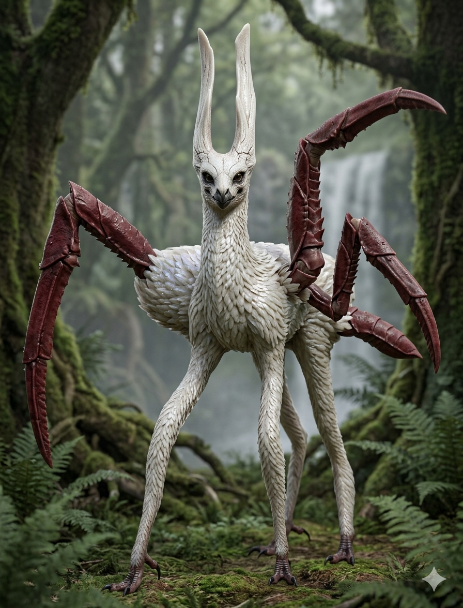
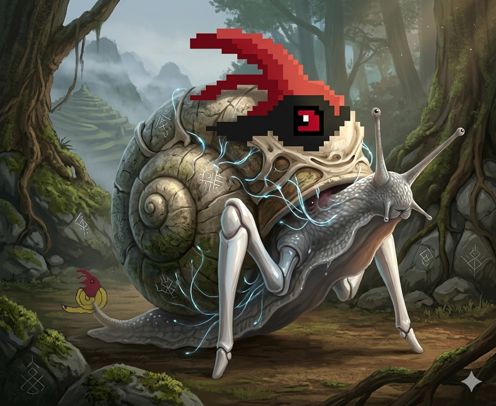

【記録映像：和温陣国生態系】
協力：T.S氏 / 和温陣国政府 / 生物が好きな視聴者
IDENTIFIER: 生物番語_01.png
双角の白鳥蜘蛛
映像解析の結果、この個体は神域を警護する性質を持つことが示唆された。美しい羽毛に隠された鋭利な脚部は、侵入者を排除するためのものである。

FILE: 生物番語_01.png

FILE: 生物番語_02.png
IDENTIFIER: 生物番語_02.png
電位殻の重歩蝸
古代遺跡周辺で観測。その殻は電気信号を蓄積・送信する機能を備えており、周囲のデジタル遺物と共鳴する様子が記録されている。